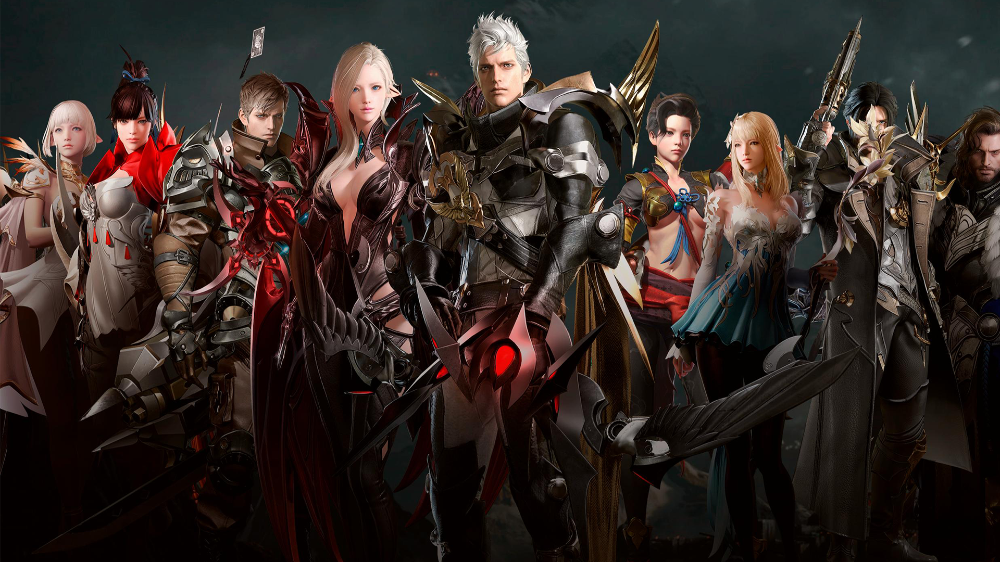
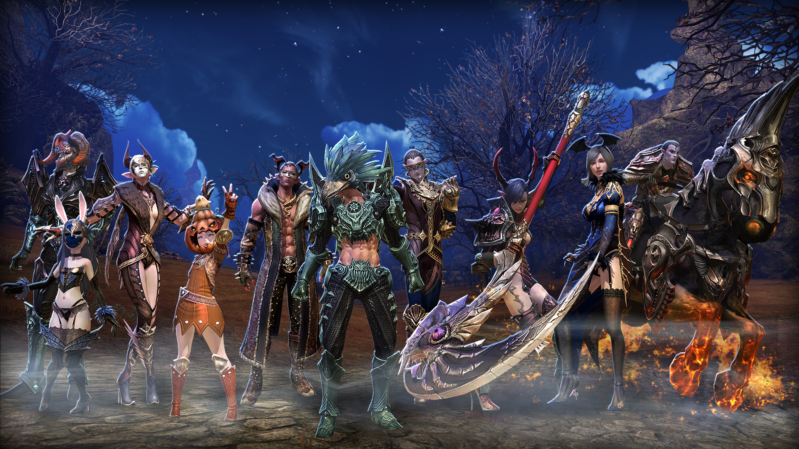
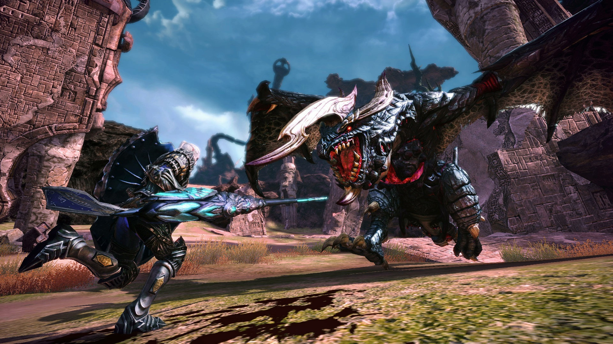
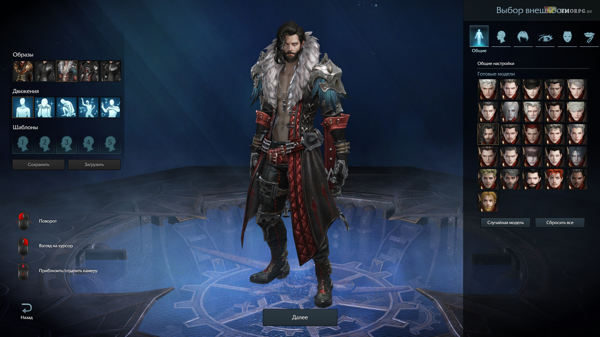
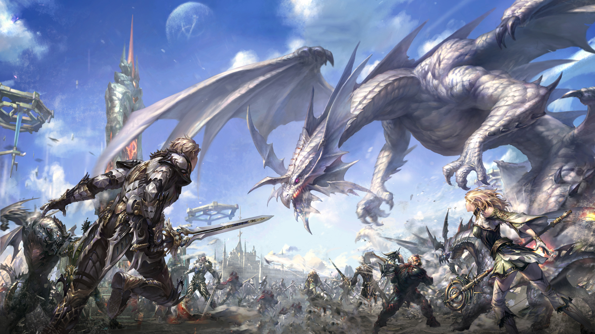
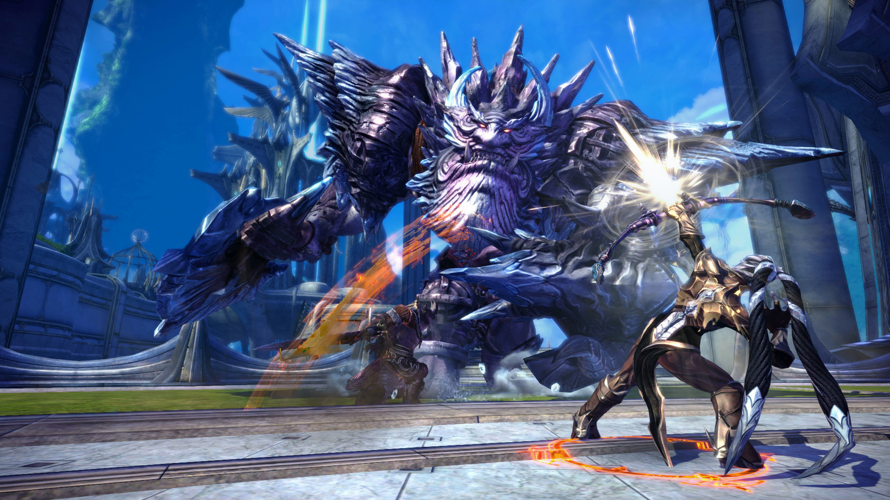

MMORPG games
A massively multiplayer online role-playing game (MMORPG) is a video game that combines aspects of a role-playing video game and a massively multiplayer online game. As in role-playing games (RPGs), the player assumes the role of a character (often in a fantasy world or science-fiction world) and takes control over many of that character's actions. MMORPGs are distinguished from single-player or small multi-player online RPGs by the number of players able to interact together, and by the game's persistent world (usually hosted by the game's publisher), which continues to exist and evolve while the player is offline and away from the game.
Although modern MMORPGs sometimes differ dramatically from their predecessors, many of them share the same basic characteristics. These include several common features: persistent game environment, some form of level progression, social interaction within the game, in-game culture, system architecture, membership in a group, and character customization. The majority of popular MMORPGs are based on traditional fantasy themes, often occurring in an in-game universe comparable to that of Dungeons & Dragons. Some employ hybrid themes that either merge or replace fantasy elements with those of science fiction, sword and sorcery, or crime fiction. Others draw thematic material from American comic books, the occult, and other genres. These elements are often developed using similar tasks and scenarios involving quests, monsters, and loot.
Although modern MMORPGs sometimes differ dramatically from their predecessors, many of them share the same basic characteristics. These include several common features: persistent game environment, some form of level progression, social interaction within the game, in-game culture, system architecture, membership in a group, and character customization. The majority of popular MMORPGs are based on traditional fantasy themes, often occurring in an in-game universe comparable to that of Dungeons & Dragons. Some employ hybrid themes that either merge or replace fantasy elements with those of science fiction, sword and sorcery, or crime fiction. Others draw thematic material from American comic books, the occult, and other genres. These elements are often developed using similar tasks and scenarios involving quests, monsters, and loot.
Progression
In nearly all MMORPGs, the development of the player's character is the primary goal. Nearly all MMORPGs feature a character progression system, in which players earn experience points for their actions and use those points to reach character "levels", which makes them better at whatever they do. Traditionally, combat with monsters and completing quests for non-player characters, either alone or in groups, are the primary ways to earn experience points. The accumulation of wealth (including combat-useful items) is also a way to progress in many MMORPGs.
This is traditionally best accomplished via combat. The cycle produced by these conditions, combat leading to new items allowing for more combat with no change in gameplay, is sometimes pejoratively referred to as the level treadmill, or "grinding". The role-playing game Progress Quest was created as a parody of this trend. Eve Online trains skills in real time rather than using experience points as a measure of progression.
Often, the widened range of equipment available at the maximum level will have increased aesthetic value to distinguish high ranking players in game between lower ranked players. Colloquially known as endgame gear, this set of empowered weapons and armor adds a competitive edge to both scripted boss encounters as well as player vs player combat. Player motivation to outperform others is fueled by acquiring such items and is a significant determining factor in their success or failure in combat-related situations.
This is traditionally best accomplished via combat. The cycle produced by these conditions, combat leading to new items allowing for more combat with no change in gameplay, is sometimes pejoratively referred to as the level treadmill, or "grinding". The role-playing game Progress Quest was created as a parody of this trend. Eve Online trains skills in real time rather than using experience points as a measure of progression.

In some MMORPGs, there is no limit to a player's level, allowing the grinding experience to continue indefinitely. MMORPGs that use this model often glorify top ranked players by displaying their avatars on the game's website or posting their stats on a high score screen. Another common practice is to enforce a maximum reachable level for all players, often referred to as a level cap. Once reached, the definition of a player's progression changes. Instead of being awarded primarily with experience for completing quests and dungeons, the player's motivation to continue playing will be replaced with collecting money and equipment.Often, the widened range of equipment available at the maximum level will have increased aesthetic value to distinguish high ranking players in game between lower ranked players. Colloquially known as endgame gear, this set of empowered weapons and armor adds a competitive edge to both scripted boss encounters as well as player vs player combat. Player motivation to outperform others is fueled by acquiring such items and is a significant determining factor in their success or failure in combat-related situations.

Roleplaying
Most MMORPGs provide different types of classes that players can choose. Among those classes, a small portion of players choose to roleplay their characters, and there are rules that provide functionality and content to those who do. Community resources such as forums and guides exist in support of this play style. For example, if a player wants to play a priest role in his MMORPG world, he might buy a cope from a shop and learn priestly skills, proceeding to speak, act, and interact with others as their character would. This may or may not include pursuing other goals such as wealth or experience. Guilds or similar groups with a focus on roleplaying may develop extended in-depth narratives using the setting and resources similar to those in the game world.

System architecture
Most MMORPGs are deployed using a client–server system architecture. The server software generates a persistent instance of the virtual world that runs continuously, and players connect to it via a client software. The client software may provide access to the entire playing world, or further 'expansions' may be required to be purchased to allow access to certain areas of the game. EverQuest and Guild Wars are two examples of games that use such a format. Players generally must purchase the client software for a one-time fee, although an increasing trend is for MMORPGs to work using pre-existing "thin" clients, such as a web browser.[
Some MMORPGs require payment or a monthly subscription to play. By definition, "massively multiplayer" games are always online, and most require some sort of continuous revenue (such as monthly subscriptions and advertisements) for maintenance and development purposes. Some games, such as Guild Wars, have disposed of the 'monthly fee' model entirely, and recover costs directly through sales of the software and associated expansion packs. Still others adopt a micropayment model where the core content is free, but players are given the option to purchase additional content, such as equipment, aesthetic items, or pets. Games that make use of this model often have originated in Korea, such as Flyff and MapleStory. This business model is alternately called "pay for perks" or "freemium", and games using it often describe themselves with the term "free-to-play".
Some games allow characters to appear on any world, but not simultaneously (such as Seal Online: Evolution); others limit each character to the world in which it was created. World of Warcraft has experimented with "cross-realm" (i.e. cross-server) interaction in player vs player "battlegrounds", using server clusters or "battlegroups" to co-ordinate players looking to participate in structured player vs player content such as the Warsong Gulch or Alterac Valley battlegrounds. Additionally, patch 3.3, released on December 8, 2009, introduced a cross-realm "looking for group" system to help players form groups for instanced content (though not for open-world questing) from a larger pool of characters than their home server can necessarily provide.
Some MMORPGs require payment or a monthly subscription to play. By definition, "massively multiplayer" games are always online, and most require some sort of continuous revenue (such as monthly subscriptions and advertisements) for maintenance and development purposes. Some games, such as Guild Wars, have disposed of the 'monthly fee' model entirely, and recover costs directly through sales of the software and associated expansion packs. Still others adopt a micropayment model where the core content is free, but players are given the option to purchase additional content, such as equipment, aesthetic items, or pets. Games that make use of this model often have originated in Korea, such as Flyff and MapleStory. This business model is alternately called "pay for perks" or "freemium", and games using it often describe themselves with the term "free-to-play".

Depending on the number of players and the system architecture, an MMORPG might be run on multiple separate servers, each representing an independent world, where players from one server cannot interact with those from another; World of Warcraft is a prominent example, with each separate server housing several thousand players. In many MMORPGs the number of players in one world is often limited to around a few thousand, but a notable example of the opposite is EVE Online, which accommodates several hundred thousand players on the same server, with over 60,000 playing simultaneously (June 2010) at certain times.Some games allow characters to appear on any world, but not simultaneously (such as Seal Online: Evolution); others limit each character to the world in which it was created. World of Warcraft has experimented with "cross-realm" (i.e. cross-server) interaction in player vs player "battlegrounds", using server clusters or "battlegroups" to co-ordinate players looking to participate in structured player vs player content such as the Warsong Gulch or Alterac Valley battlegrounds. Additionally, patch 3.3, released on December 8, 2009, introduced a cross-realm "looking for group" system to help players form groups for instanced content (though not for open-world questing) from a larger pool of characters than their home server can necessarily provide.
